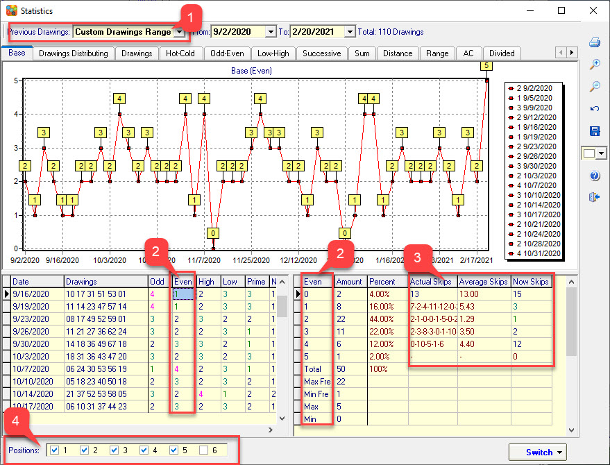

Introduction to the Statistical Analysis Interface |
SamLotto and SamP3P4 lottery software offer over 10 methods of lottery historical data analysis. The professional analysis function is very useful for setting lottery filter condition parameters. You can customize the range of analyzed drawings data, Customized analysis statistics of drawings numbers at specified positions, and analyze the skips of each value.
.

Home
Page: http://www.samlotto.com
Support:support@samlotto.com
Copyright: © SamLotto Lottery
Software Team All rights reserved.